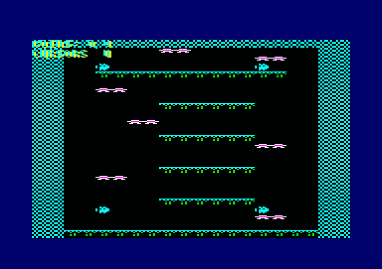
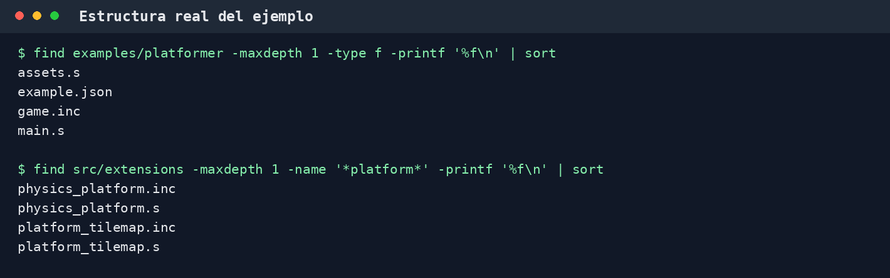
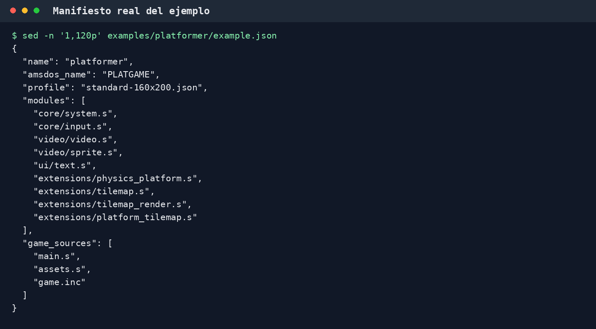
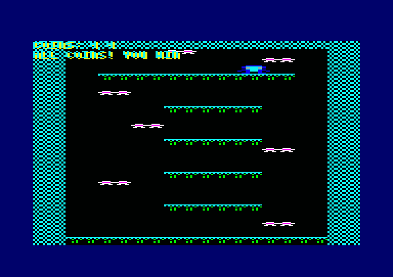
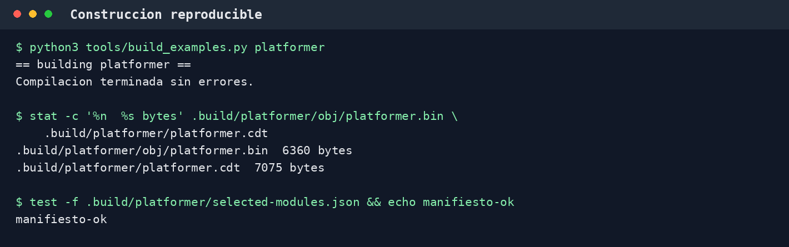

Tutorial mantenible, paso a paso, basado en el flujo de construcción y en las APIs presentes en el repositorio.
El proyecto queda dividido en cuatro archivos: example.json elige perfil y módulos, game.inc comparte constantes, assets.s conserva datos estáticos, y main.s implementa estado, inicialización y bucle. El constructor prepara un proyecto CPCTelera aislado bajo .build/<nombre>; no copie ni edite a mano ese directorio generado.
Antes de empezar, desde la raíz de GlasnostFWK, compruebe:
test -f /config/workspace/cpctelera_next/cpctelera/cpctelera.lib
python3 --version
make --versionSi CPCTelera está en otra ruta, defina CPCT_NEXT_PATH al invocar el constructor. El valor predeterminado del repositorio es /config/workspace/cpctelera_next/cpctelera.

Para seguir el tutorial sin modificar el ejemplo distribuido, utilice otro nombre:
mkdir -p examples/mi_plataformas
touch examples/mi_plataformas/example.json
touch examples/mi_plataformas/main.s
touch examples/mi_plataformas/assets.s
touch examples/mi_plataformas/game.incLa captura siguiente se genera leyendo el ejemplo real. Muestra la misma separación que debe conservar el proyecto nuevo y los módulos de plataforma disponibles.

find; no es un esquema dibujado a mano.| Archivo | Responsabilidad recomendada |
|---|---|
example.json | Dependencias explícitas, perfil de vídeo, nombre AMSDOS y fuentes del juego. |
game.inc | Offsets, máscaras y constantes compartidas entre código y assets. |
assets.s | Mapa row-major, tabla de tipos, tileset, sprites, configuración, teclas y posiciones iniciales. |
main.s | Estado mutable, inicialización, lectura de entrada, física, reglas y render. |
Escriba en examples/mi_plataformas/example.json:
{
"name": "mi_plataformas",
"amsdos_name": "MIPLATA",
"profile": "standard-160x200.json",
"modules": [
"core/system.s",
"core/input.s",
"video/video.s",
"video/sprite.s",
"ui/text.s",
"extensions/physics_platform.s",
"extensions/tilemap.s",
"extensions/tilemap_render.s",
"extensions/platform_tilemap.s"
],
"game_sources": ["main.s", "assets.s", "game.inc"]
}game_sources debe incluir main.s. Las rutas son relativas al directorio del ejemplo y el constructor rechaza rutas que escapen de él. amsdos_name se usa al integrar el BIN en el DSK común: debe contener entre uno y ocho caracteres AMSDOS válidos.

examples/platformer/example.json. Si el ejemplo evoluciona, el generador de capturas reflejará el cambio.modules; los .inc asociados se copian automáticamente cuando existen.El constructor copia las fuentes del consumidor bajo src/game. Por eso main.s y assets.s incluyen el archivo compartido con esta ruta:
.include "game/game.inc"Centralice allí offsets y reglas numéricas para no duplicarlas:
PF_PLAYER_X = 0
PF_PLAYER_Y = 1
PF_PLAYER_VX = 2
PF_PLAYER_VY = 3
PF_PLAYER_WIDTH = 4
PF_PLAYER_HEIGHT = 5
PF_PLAYER_FLAGS = 6
PF_PLAYER_SIZE = 7
PF_INPUT_LEFT = 0x01
PF_INPUT_RIGHT = 0x02
PF_INPUT_JUMP = 0x04
PF_SPEED = 2
PF_JUMP_SPEED = -8El mapa contiene identificadores de tile en orden de filas. Otra tabla traduce cada identificador a FWK_TILE_PASSABLE, FWK_TILE_SOLID o FWK_TILE_ONE_WAY. El ejemplo usa las rutinas nativas de CPCTelera Next con tiles de 4 bytes por 8 scanlines: 8x8 píxeles en Mode 0 y 20 columnas para cubrir la pantalla.
.include "cpctelera.h.s"
.include "extensions/tilemap.inc"
.include "extensions/tilemap_render.inc"
.include "video/sprite.inc"
tile_types: .db FWK_TILE_PASSABLE, FWK_TILE_SOLID, FWK_TILE_ONE_WAY
level_map:
.db 1,1,1,1,1,1,1,1,1,1,1,1,1,1,1,1,1,1,1,1
.db 1,1,0,0,0,0,0,0,0,0,0,0,0,0,0,0,0,0,1,1
; ...añada las filas restantes...
.db 1,1,1,1,1,1,1,1,1,1,1,1,1,1,1,1,1,1,1,1
FWK_TILEMAP_DESCRIPTOR level_descriptor, level_map, tile_types, 20, 25, 2, 3, 4, 8, 3Los tamaños deben ser coherentes con los desplazamientos: 4 bytes implica shift X 2 y 8 scanlines implica shift Y 3. El render opaco solo acepta las geometrías CPCTelera 2x4, 2x8, 4x4 y 4x8 bytes. Las consultas fuera del mapa y los identificadores inválidos se tratan como error/transitable, no como una pared implícita.
Cada gráfico ocupa exactamente x_size * y_size bytes Mode 0, por filas y sin padding. Concatenelos por identificador y describa la región visible:
tileset:
.rept 32
.db 0x00 ; tile 0: 4 bytes x 8 scanlines
.endm
.rept 32
.db 0x55 ; tile 1
.endm
.rept 32
.db 0xF0 ; tile 2
.endm
FWK_TILE_RENDER_DESCRIPTOR level_view, tileset, 0, 0, 0, 0, 20, 25, 3La cámara y el viewport están en tiles; screen_x está en bytes Mode 0 y screen_y es una palabra alineada al alto del tile. El render completo valida la geometría y llama a cpct_drawTileAligned4x8_f_asm para cada celda.
player_pixels:
.rept 8
.db 0xFF,0xFF,0xFF,0xFF,0xFF,0xFF,0xFF,0xFF
.endm
FWK_SPRITE_DESCRIPTOR player_sprite, player_pixels, 16, 184, 8, 8En la zona mutable reserve width * height bytes para guardar el fondo. Captura y restauración deben usar la misma posición del descriptor; restaure antes de modificar X/Y.
El perfil compacto usa un estado de siete bytes: x, y, vx, vy, width, height, flags. La configuración contiene ancho del mundo, suelo inclusivo, gravedad y caída máxima.
.include "extensions/physics_platform.inc"
player_state: .ds FWK_PLATFORM_STATE_SIZE
player_background: .ds 8 * 8
FWK_PLATFORM_CONFIG physics_config, 80, 255, 1, 8
ACTION_LEFT = 0x01
ACTION_RIGHT = 0x02
ACTION_JUMP = 0x04
bindings:
.dw Key_CursorLeft
.db ACTION_LEFT
.dw Key_CursorRight
.db ACTION_RIGHT
.dw Key_CursorUp
.db ACTION_JUMP
.dw 0
.db 0La máscara cero termina la tabla. Hay como máximo ocho bits de acción. Use fwk_input_held para movimiento continuo y fwk_input_pressed para disparar el salto una sola vez.
El suelo global en 255 actúa solo como límite de seguridad si el tilemap ya posee un suelo visible. El resolver de mapa establece FWK_PLATFORM_TILE_GROUNDED al aterrizar sobre tiles sólidos o plataformas de una dirección.
La secuencia mínima es: sistema, vídeo, módulos auxiliares, estado, entrada y escena estática.
_main::
call fwk_system_init
call fwk_video_init
call fwk_text_init
xor a
call fwk_video_clear_visible
ld a, #16
ld (player_state + FWK_PLATFORM_X), a
ld a, #184
ld (player_state + FWK_PLATFORM_Y), a
xor a
ld (player_state + FWK_PLATFORM_VX), a
ld (player_state + FWK_PLATFORM_VY), a
ld a, #8
ld (player_state + FWK_PLATFORM_WIDTH), a
ld (player_state + FWK_PLATFORM_HEIGHT), a
ld a, #FWK_PLATFORM_TILE_GROUNDED
ld (player_state + FWK_PLATFORM_FLAGS), a
call fwk_input_init
ld hl, #bindings
call fwk_input_set_bindings
ld ix, #level_descriptor
ld iy, #level_view
call fwk_tilemap_render_view
jp c, fatal_data_errorDespués dibuje objetos estáticos, capture el fondo del jugador y dibújelo. Si el render devuelve carry, el descriptor, el viewport o algún id de tile no son válidos.
El orden evita borrar la escena y garantiza que el resolver pueda reconstruir la posición anterior a partir de la velocidad:
game_loop:
call fwk_system_wait_frame
ld ix, #player_sprite
ld hl, #player_background
call fwk_sprite_restore
call fwk_input_update
call update_horizontal_velocity
call try_jump
ld ix, #physics_config
ld iy, #player_state
call fwk_physics_platform_step
ld ix, #level_descriptor
ld iy, #player_state
call fwk_platform_tilemap_resolve
; A contiene la mascara FWK_PLATFORM_HIT_*
call update_rules
call draw_player
jp game_loop ld a, (fwk_input_held)
and #ACTION_LEFT
jr z, check_right
ld a, #-2
ld (player_state + FWK_PLATFORM_VX), a
jr horizontal_done
check_right:
ld a, (fwk_input_held)
and #ACTION_RIGHT
jr z, stop_horizontal
ld a, #2
ld (player_state + FWK_PLATFORM_VX), a
jr horizontal_done
stop_horizontal:
xor a
ld (player_state + FWK_PLATFORM_VX), a
horizontal_done: ld a, (fwk_input_pressed)
and #ACTION_JUMP
jr z, no_jump
ld a, (player_state + FWK_PLATFORM_FLAGS)
and #FWK_PLATFORM_TILE_GROUNDED
jr z, no_jump
ld a, #-8
ld (player_state + FWK_PLATFORM_VY), a
no_jump:La velocidad es un byte con signo. La rutina de física aplica gravedad y caída máxima; el resolver corrige paredes, techo y suelo. No use velocidades que permitan atravesar un tile completo en un solo frame: no hay barrido continuo ni subdivisión automática.
draw_player:
ld a, (player_state + FWK_PLATFORM_X)
ld (player_sprite + FWK_SPRITE_X), a
xor a
ld (player_sprite + FWK_SPRITE_X + 1), a
ld a, (player_state + FWK_PLATFORM_Y)
ld (player_sprite + FWK_SPRITE_Y), a
xor a
ld (player_sprite + FWK_SPRITE_Y + 1), a
ld ix, #player_sprite
ld de, #player_background
call fwk_sprite_capture
ld ix, #player_sprite
call fwk_sprite_draw
retUna regla sencilla almacena cada objeto como x_tile, y_tile, activo. En cada frame, compare su rectángulo con el del jugador. Al recogerlo:
fwk_tilemap_render_cell;fwk_tilemap_render_cell recibe fila en B y columna en C, ambas relativas al viewport. Evita repintar todo el mapa por retirar un objeto.
El texto con máscara conserva el fondo en los bits transparentes, pero al sustituir un glifo pueden quedar píxeles opacos del glifo anterior. Antes de redibujar una puntuación variable, restaure las celdas de tile que ocupa el HUD y después escriba el texto. Hágalo solo cuando cambie el valor.

python3 tools/build_examples.py mi_plataformasEl constructor valida las fuentes y módulos, genera la configuración de vídeo, prepara .build/mi_plataformas y ejecuta su Makefile CPCTelera. Los artefactos principales quedan en:
.build/mi_plataformas/obj/mi_plataformas.bin
.build/mi_plataformas/mi_plataformas.cdt
.build/mi_plataformas/mi_plataformas.dsk
.build/mi_plataformas/selected-modules.jsonEl JSON generado permite auditar qué fuentes, módulos, medios y ruta de CPCTelera entraron realmente en la construcción.

platformer; los tamaños se leen de los artefactos producidos y pueden cambiar cuando cambie el código.Para CDT, abra .build/mi_plataformas/mi_plataformas.cdt en un CPC o emulador y use los comandos normales de cinta de su entorno. Una construcción aislada también produce mi_plataformas.dsk; al ejecutar el flujo completo del repositorio, la política pública reúne los BIN en el DSK común descrito a continuación.
La construcción aislada no añade automáticamente un proyecto nuevo a make examples. Para convertirlo en ejemplo mantenido por el repositorio:
mi_plataformas a EXAMPLES en el Makefile raíz.tools/build_test_disk.py.tools/package_release.py.make examples.El DSK público de pruebas queda en .build/tests/GlasnostFWK-tests.dsk y su catálogo reproducible en .build/tests/catalog.json. El nombre visible del BIN procede de amsdos_name; no puede colisionar con otra entrada.
make examples
python3 -m json.tool .build/tests/catalog.json | less| Síntoma | Comprobación concreta |
|---|---|
| El enlazador no encuentra una rutina. | Confirme que su .s figura en modules y que el símbolo está declarado con .globl. |
| El jugador se desplaza el doble. | Revise si X se introdujo como píxeles; sprites y tiles usan bytes Mode 0. |
| Atraviesa paredes o suelo. | Llame al resolver justo después de la física y mantenga la velocidad por debajo del tamaño del tile por frame. |
| No puede saltar. | Compruebe el bit FWK_PLATFORM_TILE_GROUNDED, la máscara de acción y que usa fwk_input_pressed. |
| Quedan estelas. | Restaure antes de cambiar X/Y; reserve al menos width*height bytes para el fondo. |
| El mapa no se dibuja. | Inspeccione carry tras fwk_tilemap_render_view, dimensiones, cámara, ids y tile_count. |
| El BIN no aparece en el DSK común. | La construcción aislada no basta: sincronice las listas de integración y vuelva a ejecutar make examples. |
python3 -m unittest discover -s tests -v
python3 tools/build_examples.py platformer
python3 tests/emulator_smoke.py platformer --model 6128
python3 tests/emulator_smoke.py platformer --model 464La última pareja depende de que el entorno tenga configurado el emulador empleado por el smoke. Un resultado correcto confirma el recorrido automatizado que codifique la prueba; no demuestra todas las rutas jugables posibles.
Las tres capturas de terminal no están editadas a mano: el script lee estructura y manifiesto, construye platformer y consulta los tamaños resultantes. Regénerelas desde la raíz:
make platform-guide PYTHON=.venv-docs/bin/pythonPara regenerar imágenes sin recompilar, solo si ya existen artefactos actuales:
.venv-docs/bin/python docs/images/platformer/generate_captures.py --skip-build
.venv-docs/bin/python tools/build_manual.py \
--html docs/platform-game-guide.html \
--pdf docs/platform-game-guide.pdf \
--checksum docs/platform-game-guide.sha256Las dos capturas jugables se regeneran desde el endpoint PNG del emulador. El smoke las toma al terminar la inicialización y al alcanzar la victoria:
python3 tests/emulator_smoke.py platformer --model 6128 \
--screenshot-dir docs/images/platformer--emulator pueda iniciar AmSpiriT-Lite y su servidor local.docs/manual.html: API general y contratos.docs/physics-profiles.md: estado y configuración del perfil compacto.docs/tilemap-collision.md: consulta y resolución contra el mapa.docs/tilemap-render.md: descriptores y render completo/parcial.docs/sprites.md: descriptor, clipping, captura y restauración.examples/platformer: aplicación completa sobre la que se valida esta guía.